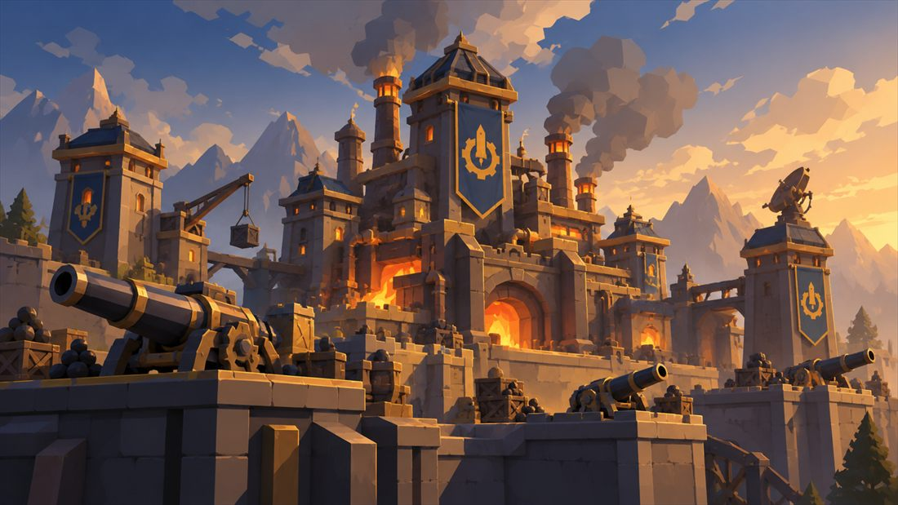

Гноми Порохівники
Школа Пороху. Артилерія, броня й ремонт без жодної магії.
- Серце
- Паровий котел
- Зброя
- Гармата
- Кубик
- d6
- Борін Пороховий КулакГарматникКартеч по палубігерой не діє 1 раунд
- Гільда КреміньСаперПідрив лафетазброя мовчить 2 раунди
- Торгрім КлючМеханікЗірвати різьбубез ремонту 3 раунди